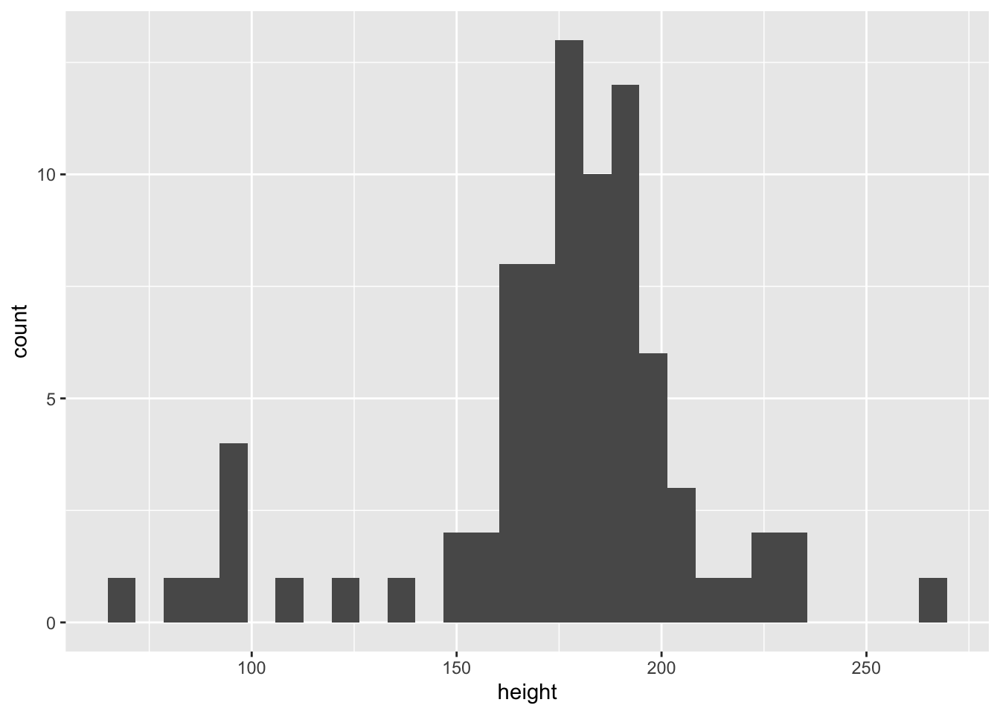

1 + 2[1] 3Quartoによって本文とコードを一緒に扱うことができ，きれいなレポート，報告書，そして最終的には論文を執筆することができる．
以下の説明で基本的なことが理解できたら Quartoのページ を確認するとよい．細かな設定をすることで自分好みの自分好みの出力が可能となる．
ファイルの拡張子は.qmdとなる．ある程度ファイルに入力したら，Renderをクリックして実行する（自動的にファイルは上書き保存される）．するとHTMLファイルが作成される．
ブラウザではなくRStudioの画面内で結果を表示させたい場合は，Renderの右の設定からPreview in Viewer Paneを選択し，Renderをクリックして実行する． もとに戻したい場合はPreview in Windowを選択する．
一番上の部分（YAML headerと呼ばれ，YAMLはプログラミング言語であり，設定ファイルの記述のためによく用いられている）はまずは次のように設定しておく．これによって結果がHTMLで出力される．今回はオプションは最小限にし，目次だけが表示される設定にしている．
---
title: "Intro Quarto"
author: "Sho Fujihara"
format:
html:
toc: true
---なお「教育調査分析法（第1回）」という授業の配布資料では次のような設定にしている．
---
title: "教育調査分析法（第1回）"
author: "藤原翔"
format:
html:
toc: true
embed-resources: true
standalone: true
scrollable: true
number-sections: true
page-layout: full
crossref:
fig-title: Figure # (default is "Figure")
tbl-title: Table # (default is "Table")
title-delim: ":" # (default is ":")
execute:
cache: true
warning: false
message: false
echo: false
date: "2023-05-10"
editor: source
---セクションについては# セクション名（ハッシュ1つ）を使用する． サブセクションについては## サブセクション名（ハッシュ2つを）を使用する． サブサブセクションについては### サブサブセクション名（ハッシュ3つを）を使用する．
通常のRのスクリプトで用いていた#は，qmdファイルの本文中で使用すると，セクションになってしまう．次のように<!--と-->でコメントを囲めばよい．
<!--
ここにコメントを書く．
-->箇条書きには-を用いる．
- 1つ目
- 2つ目
- 2つ目の1つ目
- 2つ目の2つ目
- 3つ目
- 3つ目の1つ目
- 3つ目の2つ目 \(\LaTeX\)の記法によって美しい数式を書くこともできる．数式は$$で囲む．
$$Y = b_0 + b_1X$$
$$\bar x = \frac{1}{n}\sum_{i=1}^n x_i$$\[Y = b_0 + b_1X\]
\[\bar x = \frac{1}{n}\sum_{i=1}^n x_i\]
```{r}と```の間にRのスクリプトや他の設定について入力する．たとえば1 + 2を計算したければ次のようにする．
```{r}
1 + 2
```すると次のような結果が示される．
1 + 2[1] 3結果だけを表示させたければ#| echo: falseをつける．#|によって
```{r}
#| echo: false
1 + 2
```[1] 3パッケージの呼び出しとデータの出力も同様に行う．
```{r}
# パッケージの呼び出し
library(tidyverse)
# データの表示
starwars
# 身長のヒストグラム
starwars |> ggplot(aes(x = height)) +
geom_histogram()
```すると次のように表示される．
# パッケージの呼び出し
library(tidyverse)── Attaching core tidyverse packages ──────────────────────── tidyverse 2.0.0 ──
✔ dplyr 1.1.2 ✔ readr 2.1.4
✔ forcats 1.0.0 ✔ stringr 1.5.0
✔ ggplot2 3.4.2 ✔ tibble 3.2.1
✔ lubridate 1.9.2 ✔ tidyr 1.3.0
✔ purrr 1.0.1
── Conflicts ────────────────────────────────────────── tidyverse_conflicts() ──
✖ dplyr::filter() masks stats::filter()
✖ dplyr::lag() masks stats::lag()
ℹ Use the conflicted package (<http://conflicted.r-lib.org/>) to force all conflicts to become errors# データの表示
starwars# A tibble: 87 × 14
name height mass hair_color skin_color eye_color birth_year sex gender
<chr> <int> <dbl> <chr> <chr> <chr> <dbl> <chr> <chr>
1 Luke Sk… 172 77 blond fair blue 19 male mascu…
2 C-3PO 167 75 <NA> gold yellow 112 none mascu…
3 R2-D2 96 32 <NA> white, bl… red 33 none mascu…
4 Darth V… 202 136 none white yellow 41.9 male mascu…
5 Leia Or… 150 49 brown light brown 19 fema… femin…
6 Owen La… 178 120 brown, gr… light blue 52 male mascu…
7 Beru Wh… 165 75 brown light blue 47 fema… femin…
8 R5-D4 97 32 <NA> white, red red NA none mascu…
9 Biggs D… 183 84 black light brown 24 male mascu…
10 Obi-Wan… 182 77 auburn, w… fair blue-gray 57 male mascu…
# ℹ 77 more rows
# ℹ 5 more variables: homeworld <chr>, species <chr>, films <list>,
# vehicles <list>, starships <list># 身長のヒストグラム
starwars |> ggplot(aes(x = height)) +
geom_histogram()`stat_bin()` using `bins = 30`. Pick better value with `binwidth`.Warning: Removed 6 rows containing non-finite values (`stat_bin()`).
次のように2段にわけて表示することもできる．#| eval: falseと#| echo: falseを使って，入力と出力をわけて示している．
::: .column
::: {.column width="48%"}
**入力**
```{r}
#| eval: false
library(tidyverse)
library(here)
d <- read_csv(here("data","raw","u001.csv"))
d
```
:::
::: {.column width="48%"}
**出力**
```{r}
#| echo: false
library(tidyverse)
library(here)
d <- read_csv(here("data","raw","u001.csv"))
d
```
:::
:::入力
library(tidyverse)
library(here)
d <- read_csv(here("data","raw","u001.csv"))
d出力
here() starts at /Users/sf/GitHub/R4SSRows: 1000 Columns: 72
── Column specification ────────────────────────────────────────────────────────
Delimiter: ","
dbl (72): caseid, sex, ybirth, mbirth, ZQ03, JC_1, JC_41, ZQ08A, ZQ08B, ZQ08...
ℹ Use `spec()` to retrieve the full column specification for this data.
ℹ Specify the column types or set `show_col_types = FALSE` to quiet this message.# A tibble: 1,000 × 72
caseid sex ybirth mbirth ZQ03 JC_1 JC_41 ZQ08A ZQ08B ZQ08C ZQ08D ZQ08E
<dbl> <dbl> <dbl> <dbl> <dbl> <dbl> <dbl> <dbl> <dbl> <dbl> <dbl> <dbl>
1 10001 1 1976 10 1 2 12 4 1 3 4 4
2 10002 1 1972 1 1 2 9 6 2 2 4 6
3 10003 1 1975 4 1 2 9 6 6 6 3 6
4 10004 2 1974 11 1 2 7 6 1 1 5 1
5 10005 1 1978 1 2 10 88 6 2 2 4 1
6 10006 1 1984 2 2 10 88 6 1 2 6 3
7 10007 2 1976 6 1 2 8 6 4 1 5 1
8 10008 1 1975 4 1 2 9 5 2 2 4 4
9 10009 2 1985 9 1 3 5 1 1 1 4 1
10 10010 1 1972 2 1 2 8 6 1 2 5 6
# ℹ 990 more rows
# ℹ 60 more variables: ZQ08F <dbl>, ZQ08G <dbl>, ZQ08H <dbl>, ZQ11_A <dbl>,
# ZQ11_B <dbl>, ZQ11_C <dbl>, ZQ11_D <dbl>, ZQ11_E <dbl>, ZQ11_F <dbl>,
# ZQ11_G <dbl>, ZQ11_H <dbl>, ZQ11_I <dbl>, ZQ11_J <dbl>, ZQ11_K <dbl>,
# ZQ11_L <dbl>, ZQ11_M <dbl>, ZQ11_N <dbl>, ZQ11_O <dbl>, ZQ12 <dbl>,
# ZQ14_1A <dbl>, ZQ14_1B <dbl>, ZQ14_1C <dbl>, ZQ14_1D <dbl>, ZQ23A <dbl>,
# ZQ23B <dbl>, ZQ23C <dbl>, ZQ23D <dbl>, ZQ24 <dbl>, ZQ25 <dbl>, …::: .column
::: {.column width="48%"}
**図を描くためのスクリプト**
```{r}
#| eval: false
# 身長のヒストグラム
starwars |> ggplot(aes(x = height)) +
geom_histogram()
```
:::
::: {.column width="48%"}
**図の出力**
```{r}
#| echo: false
#| label: fig-hist
#| fig-cap: 身長のヒストグラム
# 身長のヒストグラム
starwars |> ggplot(aes(x = height)) +
geom_histogram()
```
:::
:::
@fig-hist は身長のヒストグラムである．図を描くためのスクリプト
# 身長のヒストグラム
starwars |> ggplot(aes(x = height)) +
geom_histogram()図の出力
`stat_bin()` using `bins = 30`. Pick better value with `binwidth`.Warning: Removed 6 rows containing non-finite values (`stat_bin()`).
Figure 6.1 は身長のヒストグラムである．現在はFigure Xとなるように設定しているが，YAMLで変更可能である（図: Xや表: Xなど）．
:::{.panel-tabset}
## 入力
```{r}
#| eval: false
library(tidyverse)
library(here)
d <- read_csv(here("data","raw","u001.csv"))
d
```
## 出力
```{r}
#| echo: false
library(tidyverse)
library(here)
d <- read_csv(here("data","raw","u001.csv"))
d
```
:::library(tidyverse)
library(here)
d <- read_csv(here("data","raw","u001.csv"))
dRows: 1000 Columns: 72
── Column specification ────────────────────────────────────────────────────────
Delimiter: ","
dbl (72): caseid, sex, ybirth, mbirth, ZQ03, JC_1, JC_41, ZQ08A, ZQ08B, ZQ08...
ℹ Use `spec()` to retrieve the full column specification for this data.
ℹ Specify the column types or set `show_col_types = FALSE` to quiet this message.# A tibble: 1,000 × 72
caseid sex ybirth mbirth ZQ03 JC_1 JC_41 ZQ08A ZQ08B ZQ08C ZQ08D ZQ08E
<dbl> <dbl> <dbl> <dbl> <dbl> <dbl> <dbl> <dbl> <dbl> <dbl> <dbl> <dbl>
1 10001 1 1976 10 1 2 12 4 1 3 4 4
2 10002 1 1972 1 1 2 9 6 2 2 4 6
3 10003 1 1975 4 1 2 9 6 6 6 3 6
4 10004 2 1974 11 1 2 7 6 1 1 5 1
5 10005 1 1978 1 2 10 88 6 2 2 4 1
6 10006 1 1984 2 2 10 88 6 1 2 6 3
7 10007 2 1976 6 1 2 8 6 4 1 5 1
8 10008 1 1975 4 1 2 9 5 2 2 4 4
9 10009 2 1985 9 1 3 5 1 1 1 4 1
10 10010 1 1972 2 1 2 8 6 1 2 5 6
# ℹ 990 more rows
# ℹ 60 more variables: ZQ08F <dbl>, ZQ08G <dbl>, ZQ08H <dbl>, ZQ11_A <dbl>,
# ZQ11_B <dbl>, ZQ11_C <dbl>, ZQ11_D <dbl>, ZQ11_E <dbl>, ZQ11_F <dbl>,
# ZQ11_G <dbl>, ZQ11_H <dbl>, ZQ11_I <dbl>, ZQ11_J <dbl>, ZQ11_K <dbl>,
# ZQ11_L <dbl>, ZQ11_M <dbl>, ZQ11_N <dbl>, ZQ11_O <dbl>, ZQ12 <dbl>,
# ZQ14_1A <dbl>, ZQ14_1B <dbl>, ZQ14_1C <dbl>, ZQ14_1D <dbl>, ZQ23A <dbl>,
# ZQ23B <dbl>, ZQ23C <dbl>, ZQ23D <dbl>, ZQ24 <dbl>, ZQ25 <dbl>, …Zoteroなどの文献管理アプリを通じてbibファイルを作成し，引用する．
@knuth84とすれば Knuth (1984) となる． [@knuth84]とすれば (Knuth 1984) となる．